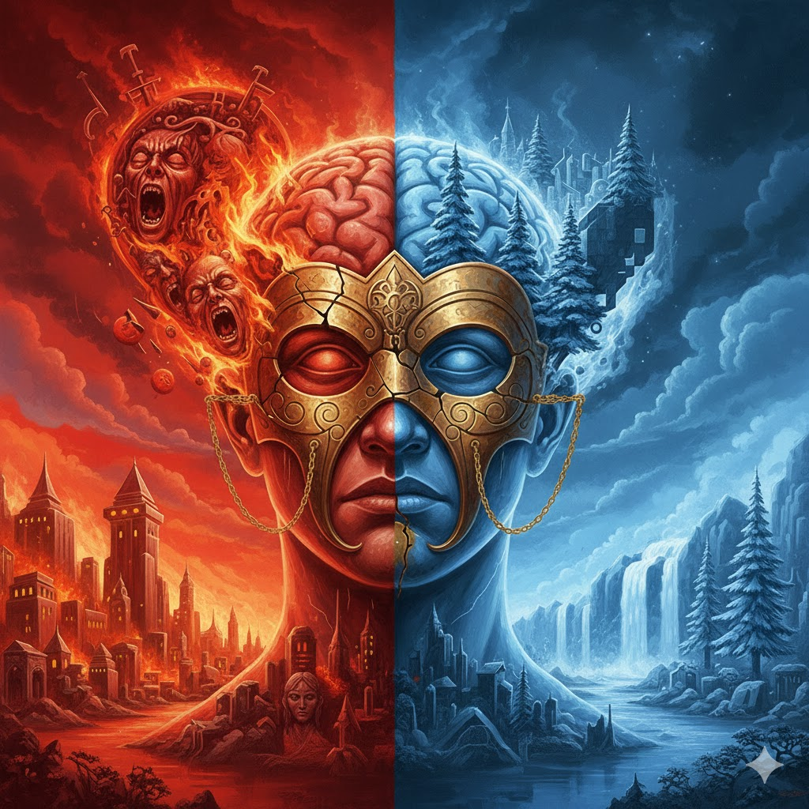
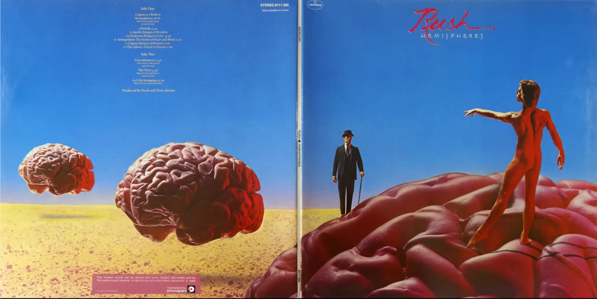

I Struggle with My Own Ego
I hope that I'm not the only person who struggles with their own ego. I constantly question my own sense of self-importance, self-esteem, and self-worth. My parents would never say such things, but since I was a child, strangers have told me relatively consistent things about my good qualities. I have always been uncomfortable with compliments. Maybe I have secretly appreciated the flattery.
Originally published to:
It may appear to others that I have been relatively successful in life, and some of that may be due to my innate characteristics and efforts, but I can see all of it as dumb luck and lack of alternative interests. I am aware that nothing I ever do is perfect and much of it is not even good enough for my own standards, let alone those of people with greater capabilities than I have.
For a time, I felt almost famous in my small technical community, where I actually had fans that would ask to take selfies with me and express strong respect and appreciation. That situation became so unhealthy for my ego that I gave it up, for example abandoning thousands of followers that I had amassed on twitter more than a decade ago. To be honest, I still meet random strangers that know who I was in those days, and it still gives me the same mixed sense of both pride and somehow embarrassment. While I try to be humble, I seem to transition from an inflated ego that is actually arrogant to a fragile ego excessively ashamed of my own flaws and shortcomings, most of which likely are not even apparent to others.
I claim to write for myself and my children, but then why do I publish, why am I embarrassed when I look back and find errors or misguided thoughts, why do I check for the traffic reports, and why do I care for interactions online? Why do I care whether other people like me, or even worse, my output? Why do I care what other people think at all? I claim that I want to help others, but do I really think that anyone can benefit from reading what I write? Why do I have to make an effort and remind myself not to care what others think? Is my attempt to retain humility just another falsehood? Do I actually consider myself to be better than other people, or worse? Do I actually believe in equality?
Sometimes I feel below everyone else and sometimes I have to work hard to avoid judging others. I want to be a good listener, though often I just want others to listen to me. I waver between a need for social validation and a desire to just be left alone. While I want to maintain appearances for others, I also don't want to be seen at all. After I realize that I have been overconfident, I can find myself working hard to maintain a false bravado to hide my own sense of impostor syndrome. I am aware that my sense of self is itself a falsehood, but I can also feel completely alone, disconnected, misunderstood, and even ignored by every other person in the world. I constantly try to better myself but experience setbacks and fear that the goal is infinite. I am not always conscious when my defense mechanisms manifest.
Maybe all of this is related to what I suspect is my own bipolar tendencies (previously known as manic-depressive), which may run in my family. One day or even one moment, I can be excessively energetic, full of confidence, even braggadocio, and the next I can be fatigued, self-critical, and deeply ashamed of myself.
I realize that this is just a ramble; that seems to be how I express myself most completely nowadays. To be clear, I would appreciate any comments about others' own related experiences, but this post is not in any sense a request for personal support. I see this conflict in myself as a challenge that I must face on my own. I do not see compliments and would actually prefer constructive criticism.
After writing, I asked Google Gemini what famous literature my words brought to mind. I'm actually a fan of both Hesse and Sartre, which seemed the most relevent, so no surprises there:
-
Hermann Hesse's Siddhartha: The journey of seeking a complete self, navigating the tension between the spiritual (solitude) and the material (social life).
-
Jean-Paul Sartre's concept of Bad Faith: Living inauthentically by denying one's freedom or responsibility, often by adopting a role (like the "successful person" or the "humble person").
I am definitely on such a journey and working to avoid acting in such bad faith.
I can often relate to a concept that I learned from Buddhism of walking the middle path between any extremes. It's like walking on a razor's edge sometimes, and confusing when I consider one side to be good and the other evil. Still, it does seem to be a good principle to keep in mind.
I guess I'm still trying to incorporate my shadow into my identity.
Maybe some of my thoughts on this topic come from the Hemispheres album by RUSH, or maybe these tendencies are related to why I like the band and particularly that album.

When our weary world was young
The struggle of the ancients first began
The gods of Love and Reason
Sought alone to rule the fate of ManThey battled through the ages
But still neither force would yield
The people were divided,
Every soul a battlefield…
Comments
You can comment here: